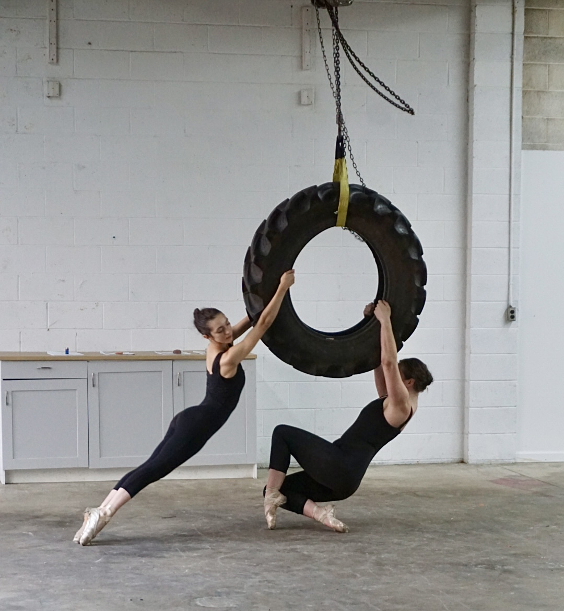
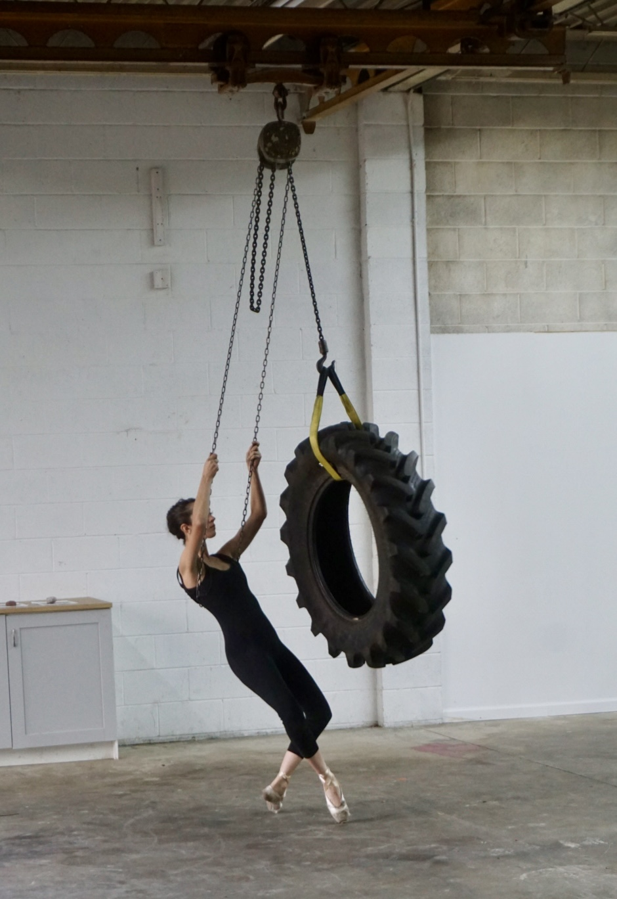
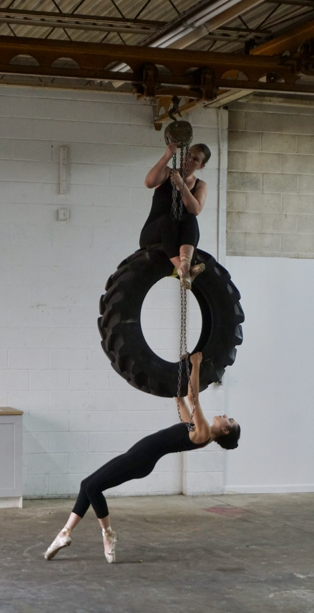
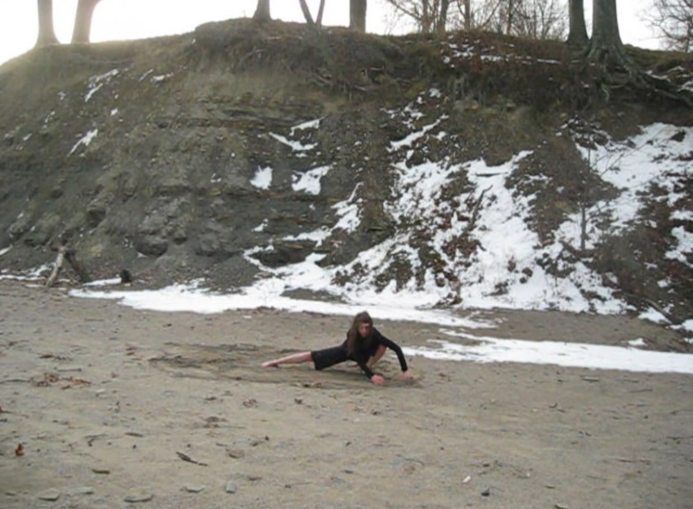
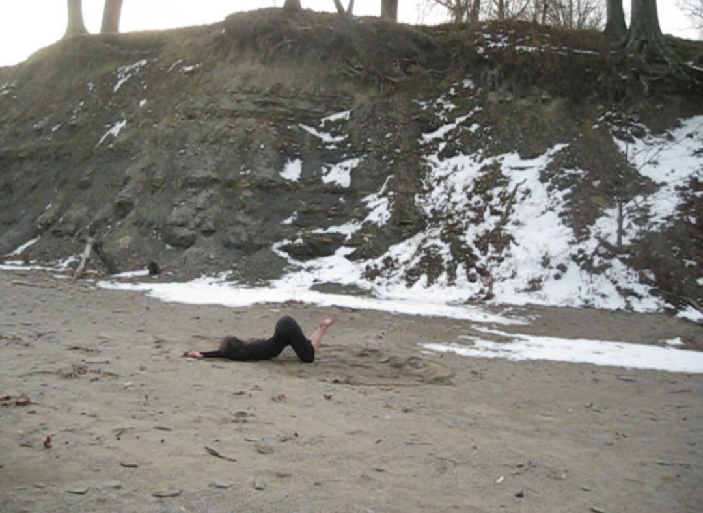
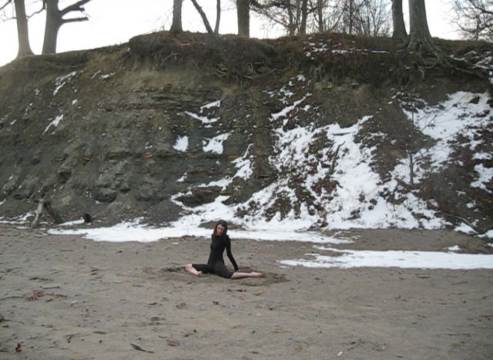

Tire Dance
with Celia Romanoski
Performed on September 5, 2025 at Vessel City within Jon Gott's Objects in mirror are closer than they appear., a show curated by Gabrielle Banzhaf
photos by Rabbi Yoder
video



Movement Study for Dredging
Performed on January 6, 2026
Filming and additional movement direction: Celia Romanoski
video


Eighth Turn
Performed on April 4, 2026 at Orange Dog Studio in Rimersburg, PA, for the closing of Kim Bissett's My Father's Smile, a show at SHED Projects



Performed on January 6, 2026
Filming and additional movement direction: Celia Romanoski
video